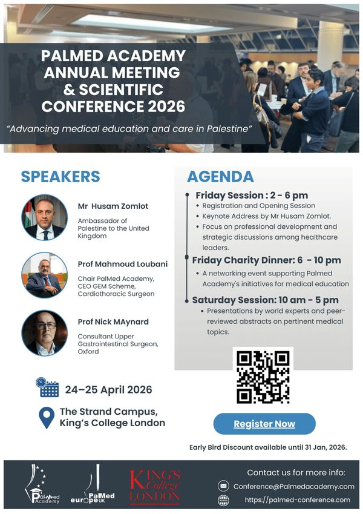
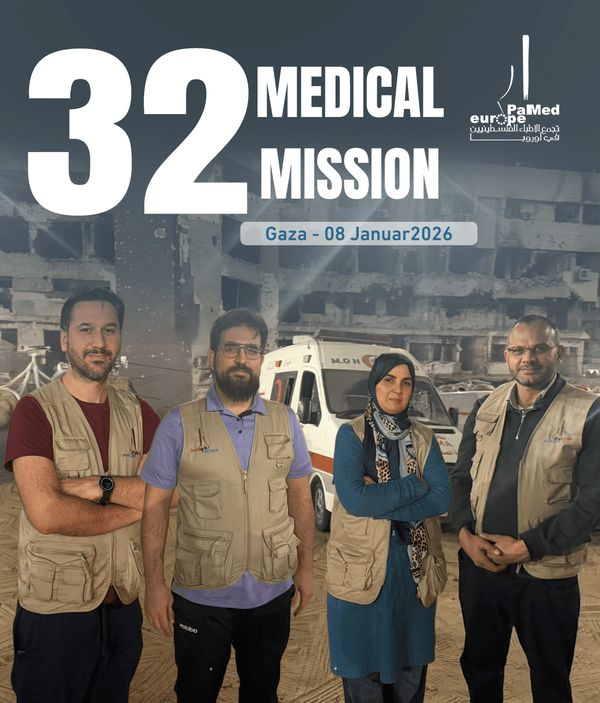
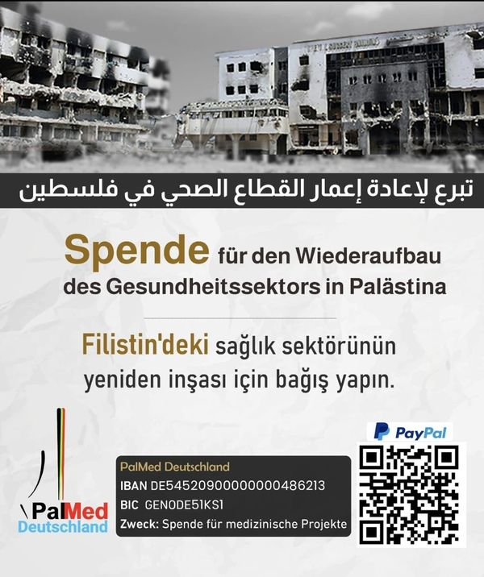

19JanJahrestreffen der PalMed Academy
Jahrestreffen der PalMed Academy – Austausch, Fortbildung und Planung der kommenden Programme.
WeiterlesenErfahren Sie die neuesten Informationen über unsere medizinischen Projekte, kommende Veranstaltungen und Highlights unserer Arbeit.

19JanJahrestreffen der PalMed Academy – Austausch, Fortbildung und Planung der kommenden Programme.
Weiterlesen
19JanBericht über die 32. medizinische Delegationsreise: Operationen, Sprechstunden und Schulungen vor Ort.
Weiterlesen
7NovPalMed unterstützt den Wiederaufbau der medizinischen Infrastruktur in Gaza – Kliniken, Geräte und Personal.
WeiterlesenSpendenaufruf: Im Februar 2025 startete der Wiederaufbau der Dialyse-Einheit im Al-Shifa-Krankenhaus in Gaza.
Am 21. Juni 2025 fand der 18. PalMed-Jahreskongress in Dortmund statt – mit wissenschaftlichem Programm und Ratssitzung.
Die fünfte Runde unseres Stipendienprogramms für Medizinstudierende ist ausgeschrieben – Bewerbungen sind ab sofort möglich.
Kooperationsprojekt zur Behandlung von traumatisierten Kindern: deutsche Expertinnen und Experten schulen Fachkräfte vor Ort.
Ein neurochirurgisches Expertenteam operierte und schulte im Rafidia-Krankenhaus in Nablus.
In Zusammenarbeit mit der Ammerland-Klinik Westerstede bilden wir palästinensische Ärztinnen und Ärzte weiter.
Das Deutsch-Palästinensische Ärzteforum wurde mit dem Buscher-Media Zukunftspreis ausgezeichnet.
PalMed organisierte mehrere Iftar-Veranstaltungen für Mitglieder, Familien und Freunde des Forums.
Rückblick auf den 10. PalMed-Kongress in Düsseldorf.
Das sechste Studenten-Camp brachte Medizinstudierende aus ganz Deutschland zusammen.
Ein Rückblick auf unsere zuletzt durchgeführten Veranstaltungen.
Resilienz im Gesundheitssystem – KI und Vernetzung in Krisenregionen.
Iftar und Begegnungsabend für Mitglieder, Familien und Freunde des Forums.
Online-Fortbildung zu psychischer Gesundheit in Krisenregionen.
Fachvorträge zu Medizin und Fasten.
Fachkonferenz mit Expertinnen und Experten der Herzchirurgie.
Schreiben Sie uns – wir antworten in der Regel innerhalb weniger Tage.